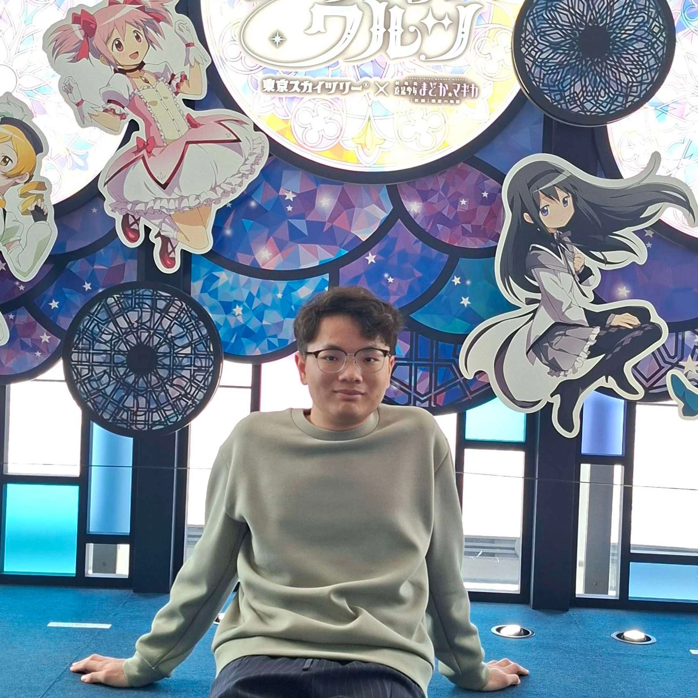
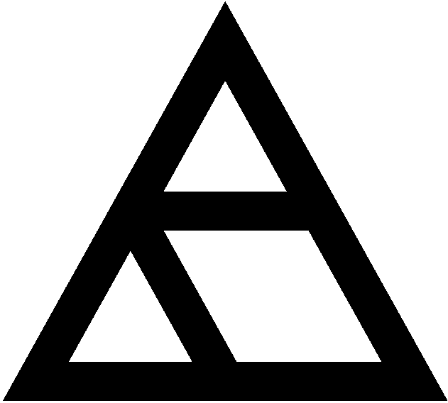
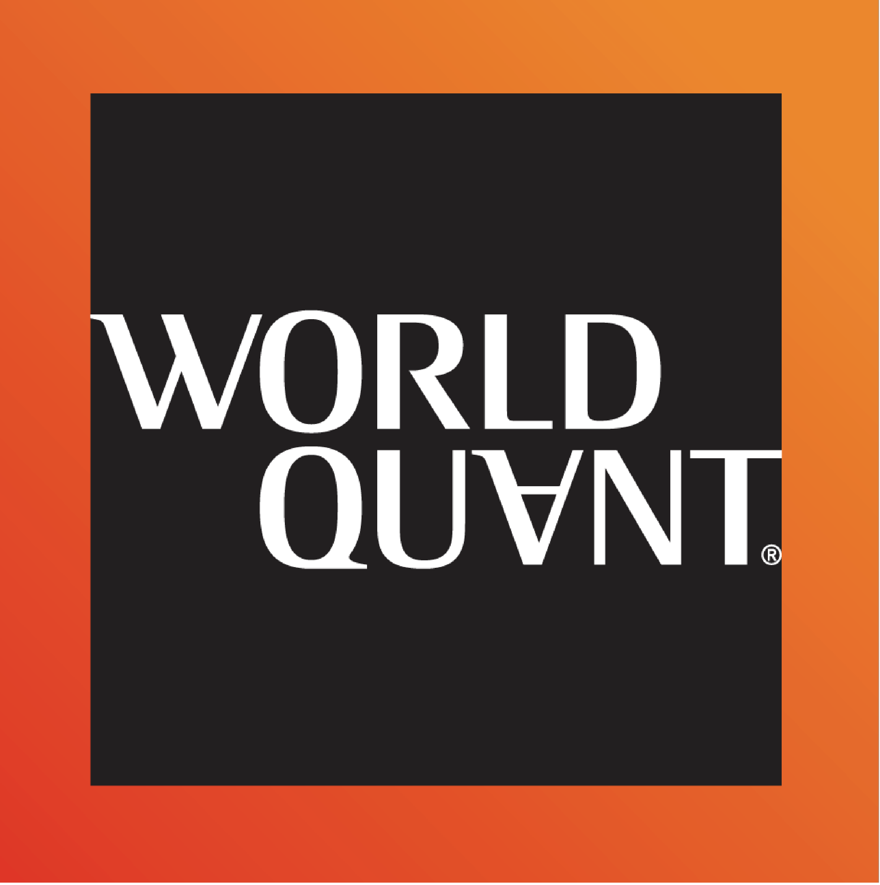
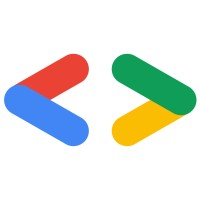

You-Zhe Xie (謝侑哲)
Undergraduate Student @ National Yang Ming Chiao Tung University
I am a 4th-year undergraduate student in CPLab@NYCU, advised by
Prof. Yu-Lun Liu.
I'm currently exploring world modeling through computer vision: how vision models might learn to simulate the world,
and whether they can grasp its rules well enough to reason and act.
I am also a research intern at Alaya Lab (Tokyo)
and a part-time research assistant at Academia Sinica,
working with Dr. Jun-Cheng Chen.
I am actively seeking interns and research collaborations. If you are interested in working with me, don't hesitate to reach out.
Stay curious. Stay lost. Keep going.

- 3D
- 4D
- Video Generation
Experience



News
Projects
Honors & Awards
Misc.
- 🌸Big fan of anime, comics & games (ACG) — Nijika Ijichi (伊地知虹夏) is my oshi (推し).
- 🎮I enjoy video games and board games 🎲.
- 🎧Always have J-pop playing.
- 🔍I love falling down rabbit holes out of curiosity — questions about technology, society, or anything in between.